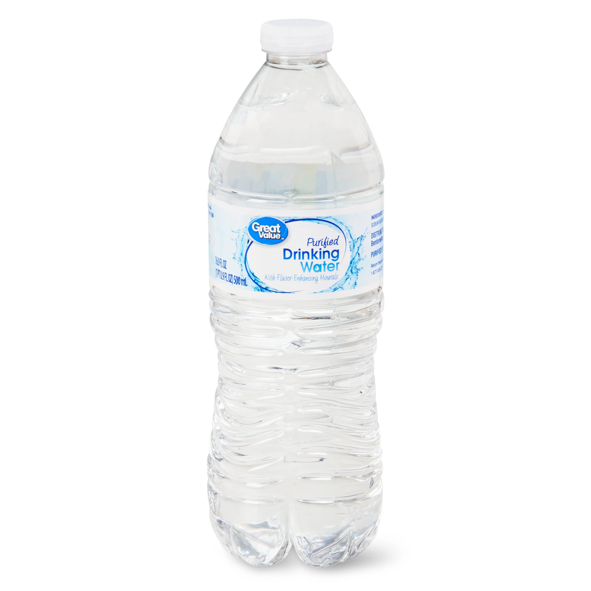

What is a Xenoblaster?
A Xenoblaster is a pressuried, sophisticated water gun made with the average sized 17 fl oz plastic water bottle. Xenoblasters are very easy to modify, and it takes about 2 minutes to make one.
Reccomended bottle size to use:

How to use a Xenoblaster
To use a Xenoblaster, position one hand near the back of the chamber (water bottle) and the other near the front of the chamber. Make sure the nozzle is facing away from you. When ready to fire, firmly squeeze the front of the chamber using the hand you positioned there. You can affect the IR (Inch Range) by squeezing harder (higher IR), or softer (lower IR). If your steam of water is relitively weak, squeeze with both hands. If the problem persists, consult our FAQ page.
What is IR and IRi?
The IR (Inch Range) of a Xenoblaster is a measurement of how many inches the beam of water summoned when fired is stable.
The IRi (Inch Range Ideal) of a Xenoblaster is the IR of a Xenoblaster used in the most efficient way it can possibly be used in.
What is tIR?
tIR or tIRi (Theoretical Inch Range) is the approximate IR of a never before tested Xenoblaster.